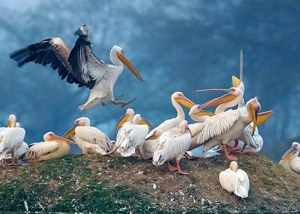
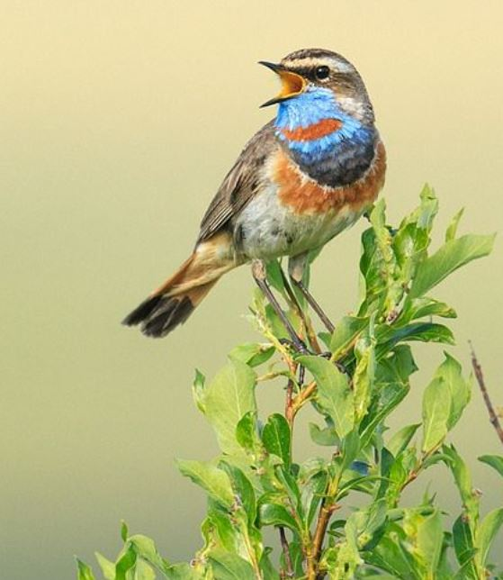

Deccan Chronicle
CONTINUED FROM PAGE 1
Dr Sathiya Selvam, head of Wetlands and Flyways pro gramme at BNHS (Bombay Natural History Society) says."Birds like black-winged stilts are biological Indicators. If they declining, it is an indicator of a potential issue or threat"
WETLAND ECOSYSTEM
stopover for migratory birds, wetlands offer food, shelter, and
breeding grounds. These areas teem with aquatic life, provid ing an
abundant food source for birds such as ducks, geese, and shorebirds.
The shallow waters of wetlands are ideal for forag- ing, and the surrounding
vege tation provides essential nest- ing sites.
Despite their ecologi-
cal signifi- cance, wetl-
ands in India are und-
er severe
threat due to urbanisation.agricul-
tural expansion, p-
ollution, and clima-
te
change. Rapid u-
rban development
and the conversion
of wetlands for a-
griculture
have led
to the draining and degr-
ation of these critical habit-
ats. Pollution
from industrial runoff and untreated sewage further exacerbates problem
NATURAL SEWAGE TREATMENT
Kolkata's wetlands process 60% of the city's sewage, saving over $64 million annually, as per a 2017 University of Calcutta study. Each day, 910 million litres of nutrient-rich sewage enter the wetland, sustaining a network of around 250 ponds covered with hyacinths.$
Kolkata's wetlands process 60% of the city's sewage, saving over $64 million annually, as per a 2017 University of Calcutta study. Each day, 910 million litres of nutrient-rich sewage enter the wetland, sustaining a network of around 250 ponds covered with hyacinths.$
 Migratory birds at a lake in Ajmer, Rajasthan
Migratory birds at a lake in Ajmer, Rajasthan
ANNUAL FLYING VISITORS
FACE MIGRATION WOES
FACE MIGRATION WOES
Migratory birds at Navi Mumbai mudflats PHOTO: RAJESH JADHAV

Narkara are also facing similar issues due to rapid urbanisa- tion, pollution, and siltation.
"From the smallest bird little stint to curlew or pelican, fly for thousands of kilometres. Their
main requirement is diet or the prey matter. The accumulation of metals or the availability of
metals in the water birds is perhaps due to their prey matter. The sources of the metals to the
water birds are their prey or diet sources," says Jeganathan.Jeganathan says that urbani- sation
is a significant factor in the shrinkage of wetlands. "Most of the agricultural wet- lands are
converted into real estate in the southern part of India which is a big worry and a threat."The
LULC (Land Use/Land Cover) classes have undergone marked changes in the past two decades on the
east coast of southern India (Chennai to Kanyakumari, including Point Calimere Wildlife Sanctuary,
Pichavar mangrove forest and Pulicat Lake).Around 8 sq.km of vegetation was lost.

Vedanthangal bird
sanctuary, Tamil nadu

The Bluethroat flies all the way from Europe and Alaska to Rajasthan
"Birds like black-winged stilts are biological indicators.
If they are declining,it is an indicator of a potential issue or threat."
-DR SATHIYA SELVAM
Head of Wetlands
programme,BHNS
of big plants require minimal permission and less paperwork when
building on free land as opposed to private lands that require heavy
documentation and formalities," says Dr Selvam. He further added that.
blades of wind turbines, trans- mission lines, privatisation of energy
distribution, are some of the other factors that harm the migration of birds.
DEADLY IMPACT
The decline of wetlands has affected various migratory bird species Siberian Crane, Bar headed Goose, and various species of ducks that rely on wetlands for their survival. These birds face challenges in finding suitable places to rest, feed, and breed..AWC reports a significant decline in long-distance water bird migration due to global cli mate change and shrinking wet mads change In autumn 2023. Najafgarh Jheel, Sultanpur NP, Okhla Bird Sanctuary, and Dhanauri village wetland observed fewer water birds. Rapid urban development has led to over 50% shrinkage of Najafgarh Lake in Delhi and Pallikaranai in Chennai, caus ing a scarcity of water sources
NEED OF THE HOUR
Migratory bird decline in India underscores the urgent need to protect wetlands. Conservation must be prioritized to reverse damage. Jeganathan urges awareness, regulated tourism, and eco-friendly practices to prevent mudflats.
DEADLY IMPACT
The decline of wetlands has affected various migratory bird species Siberian Crane, Bar headed Goose, and various species of ducks that rely on wetlands for their survival. These birds face challenges in finding suitable places to rest, feed, and breed..AWC reports a significant decline in long-distance water bird migration due to global cli mate change and shrinking wet mads change In autumn 2023. Najafgarh Jheel, Sultanpur NP, Okhla Bird Sanctuary, and Dhanauri village wetland observed fewer water birds. Rapid urban development has led to over 50% shrinkage of Najafgarh Lake in Delhi and Pallikaranai in Chennai, caus ing a scarcity of water sources
NEED OF THE HOUR
Migratory bird decline in India underscores the urgent need to protect wetlands. Conservation must be prioritized to reverse damage. Jeganathan urges awareness, regulated tourism, and eco-friendly practices to prevent mudflats.